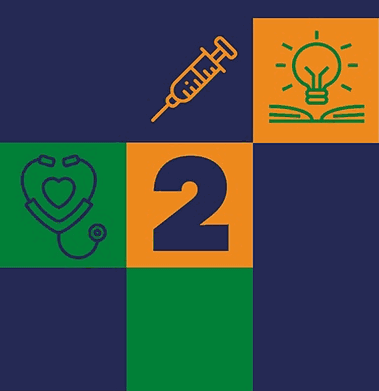
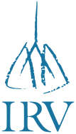

EJE01
Transformaciones del cuidado y humanización
Atención integral, segura y centrada en las personas: modelos de cuidado, humanización, bioética, derechos del paciente y preservación del vínculo humano ante los cambios tecnológicos.

Docencia, ciencia y asistencia: el triple compromiso de la Enfermería universitaria
2026 · 08:00 a 17:30 hs
La profesión de Enfermería ocupa un lugar central en el cuidado de la salud y constituye uno de los pilares esenciales de los Hospitales Universitarios.
Su aporte se expresa en la atención directa y continua de las personas, la prevención de enfermedades, la educación para la salud, el acompañamiento de pacientes y familias y la articulación con los distintos equipos de atención. A su vez, participa en la formación, la investigación y el desarrollo de prácticas que contribuyen a mejorar la calidad del cuidado.
En este marco, resulta indispensable generar un espacio propio para reconocer, compartir y fortalecer los conocimientos y experiencias construidos por quienes desarrollan esta tarea, poniendo en valor el saber de Enfermería y su aporte indispensable al funcionamiento de los Institutos Asistenciales.
El Congreso propone ser un ámbito de encuentro, intercambio y formación, donde los/as trabajadores/as del equipo de Enfermería asuman un rol protagónico en el debate sobre el cuidado, las prácticas profesionales, la producción de conocimiento científico basado en evidencia y los desafíos que atraviesa el sistema de salud.
Desde una mirada que articula trabajo, formación académica y organización sindical, buscamos fortalecer la identidad NODOCENTE y el protagonismo de la profesión dentro de la comunidad universitaria. Jerarquizar Enfermería también implica reconocer el valor de quienes la ejercen, promover su participación en los ámbitos institucionales y gremiales, y mejorar el desarrollo de prácticas de cuidado de calidad.
Esta instancia formativa se propone construir colectivamente un mayor reconocimiento y participación, reafirmando el compromiso irrenunciable con las y los trabajadores de la salud pública y la educación universitaria de excelencia.
Atención integral, segura y centrada en las personas: modelos de cuidado, humanización, bioética, derechos del paciente y preservación del vínculo humano ante los cambios tecnológicos.
La Enfermería como disciplina científica: formación de grado y posgrado, educación continua, investigación, práctica basada en evidencia, simulación clínica y rol estratégico de los hospitales universitarios.
Cambios epidemiológicos, demográficos y ambientales: envejecimiento, salud mental, cuidados paliativos, emergencias y vulnerabilidad social, con la Enfermería como articuladora comunitaria.
Impacto de la IA y las tecnologías digitales en la práctica y la gestión (teleenfermería, historia clínica electrónica, ciberseguridad) y los límites de la automatización frente a la empatía y la presencia humana.
| Horario | Formato | Actividad |
|---|
Los títulos, moderadores/as y disertantes se confirmarán en la próxima circular.
Participa de las ponencias centrales, los talleres prácticos y la sesión de pósteres.
Presenta un trabajo en formato póster en la categoría Estudiante o Profesional, enmarcado en uno de los cuatro ejes temáticos.
Quienes participen como expositores/as pueden elegir:

Universidad de Buenos Aires · Barrio de Recoleta, frente a Plaza Houssay.